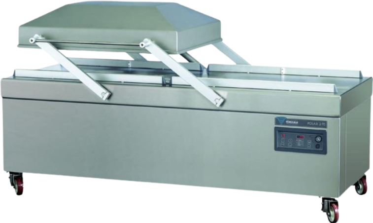
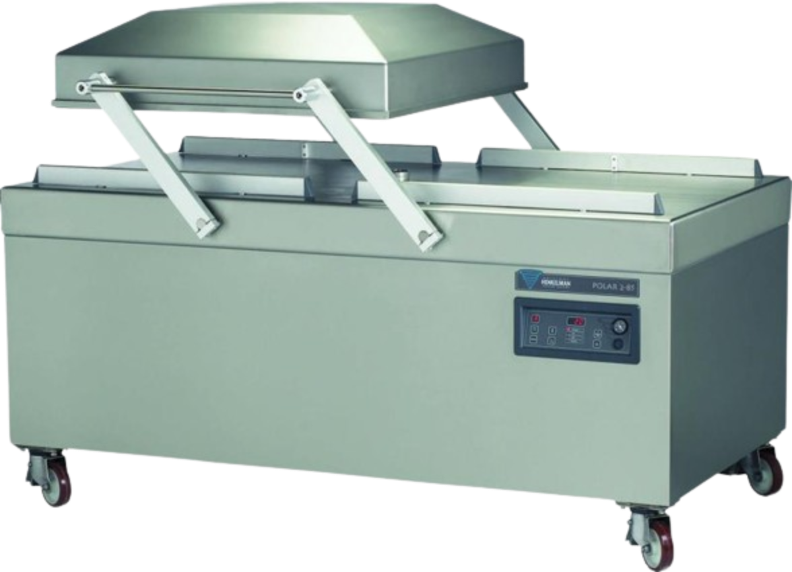
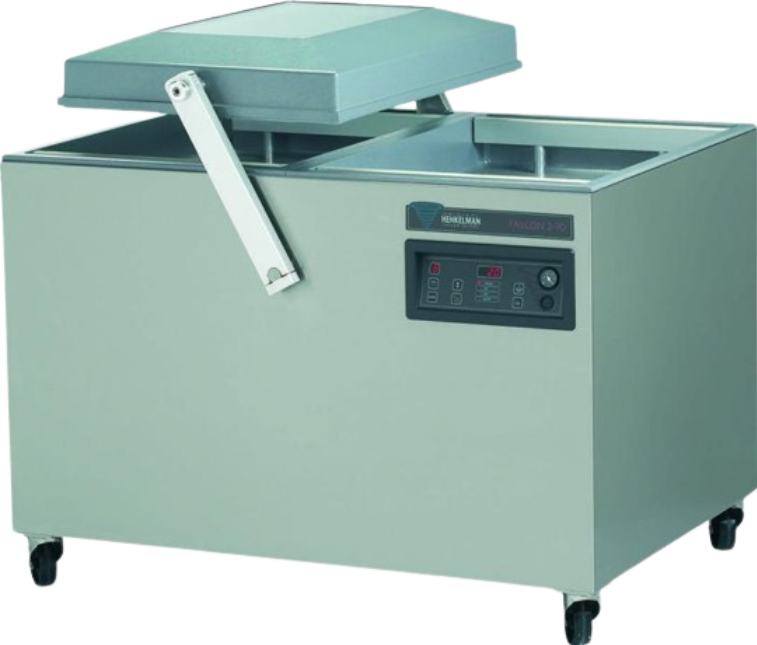
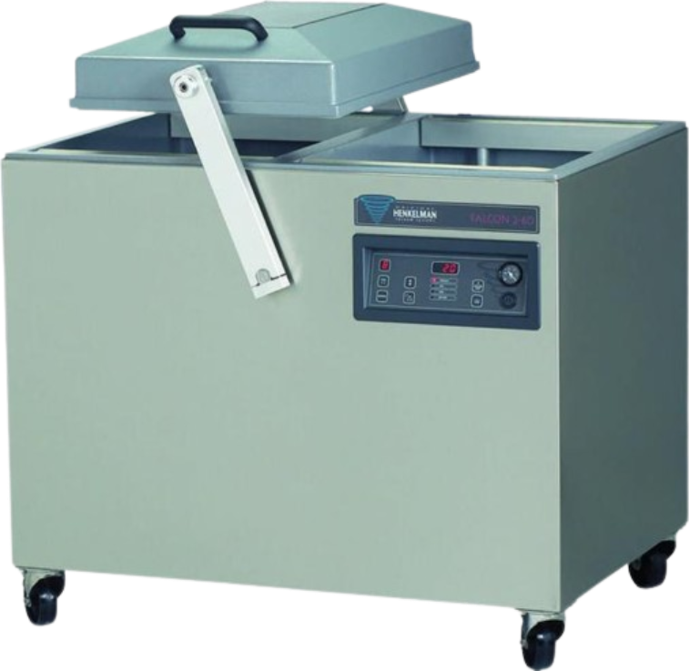

Vaakumpakendaja
Kahekambrilised vaakumpakendajad
Garantii tippklassist Henkelman masinatele 3 aastat!
Hinnad ei sisalda käibemaksu.
HENKELMAN POLAR 2-95

Kahekambriline põrandamudel
Roostevabast terasest
Sile kambri tööpind kõrge hügieenitasemega
Roostevabast terasest kambrikaas
Puhastamiseks lihtsalt eemaldatavad osad kambrist
Integreeritud keevistalad kambrikaanes
Kambri täiteplaadid komplektis
Vaakumpump 300 m3/h
Masina töötsükli kiirus 10-30 s
Mõõdud 2420 x 1210 x 1130 mm
Kambri mõõdud 1100 x 730 x 280 mm (x2)
Võimalikud lisaseadmed ja modifikatsioonid
HENKELMAN POLAR 2-85

Kahekambriline põrandamudel
Roostevabast terasest
Sile kambri tööpind kõrge hügieenitasemega
Roostevabast terasest kambrikaas
Puhastamiseks lihtsalt eemaldatavad osad kambrist
Integreeritud keevistalad kambrikaanes
Kambri täiteplaadid komplektis
Vaakumpump 300 m3/h
Masina töötsükli kiirus 10-30 s
Mõõdud 1980 x 1230 x 1180 mm
Kambri mõõdud 830 x 840 x 210 h mm (x2)
Pinge 400V-3-50 Hz
Võimsus 7,0 - 9,0 kW
Lisaseadmed:
Hooldussari
Gaasiga pakkimise moodul (MAP)
Sensorjuhtimisega digitaalne juhtpaneel
HENKELMAN FALCON 2-70

Kahekambriline põrandamudel
Roostevabast terasest konstruktsioon
Alumiiniumist vaakumkamber
Alumiiniumist kambrikaas klaasaknaga
Puhastamiseks lihtsalt eemaldatavad osad kambrist
Keevitustalad integreeritud kambrikaane külge
Kabmbri täiteplaadid komplektis
Töökindel ja tugev
Vaakumpump 100 m3/h
Masina töötsükli kiirus 15-40 s
Mõõdud 1260 x 1010 x 1070 mm
Kambri mõõdud 550 x 700 x 235h mm (x2)
Lisaseadmed:
Kaldega kambri täiteplaadid vedelatele toodetele
Hooldussari
Gaasiga pakkimise moodul (MAP)
Sensorjuhtimisega digitaalne juhtpaneel
HENKELMAN FALCON 2-60

Kahekambriline põrandamudel
Roostevabast terasest konstruktsioon
Alumiiniumist vaakumkamber
Alumiiniumist kambrikaas klaasaknaga
Puhastamiseks lihtsalt eemaldatavad osad kambrist
Keevitustalad integreeritud kambrikaane külge
Kabmbri täiteplaadid komplektis
Töökindel ja tugev
Vaakumpump 100 m3/h
Masina töötsükli kiirus 15-40 s
Mõõdud 1060 x 880 x 1070 mm
Kambri mõõdud 450 x 580 x 235h mm (x2)
Lisaseadmed:
Kaldega kambri täiteplaadid vedelatele toodetele
Hooldussari
Gaasiga pakkimise moodul (MAP)
Sensorjuhtimisega digitaalne juhtpaneel